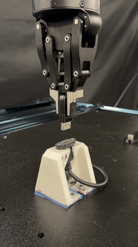

DisplayPort Insertion with Isaac ROS#
Train a DisplayPort insertion policy in Isaac Lab, validate it with hardware-in-the-loop simulation testing, then deploy it to a real robot.
Note
Required before simulation or real-robot deployment: Complete Workspace and Developer Environment Setup to create your source workspace and initialize the Isaac ROS development environment. Both tutorials use this shared setup.

Follow the IsaacLabTraining documentation to train your DisplayPort insertion policy in Isaac Lab.

Test the trained policy with the DisplayPort pickup and insertion workflow in Isaac Sim before deploying to a real robot.

Run the complete DisplayPort cable insertion workflow or deploy the task-space insertion policy with an already-grasped cable.
Before You Begin#
Review the system requirements, then complete the setup guide. For setup failures, see troubleshooting.